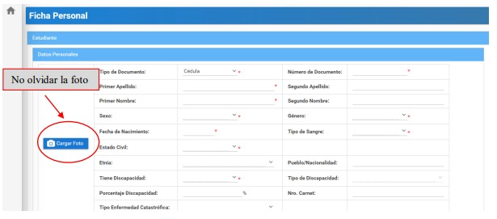

PLATAFORMA SIGA
Bienvenido al sistema de aprendizaje para acceder a la Plataforma SIGA
Indicaciones para Ingresar
- Accede a la plataforma utilizando el enlace proporcionado por el Instituto.
- Ingresa tus credenciales de usuario y contraseña.
- Una vez iniciada sesión podras ingresar a la plataforma donde te vas a dirigir a la parte izquierda donde esta una casa y daras click, para abrir el apartado Academico
- Cuando hayas ingresado a la sección de lo Academico podras acceder a los diferentes apartados como:
- En el apartado de "Consultar Matricula" Podras saber toda la información respecto a tu matricula. Como por ejemplo: El periodo academico, el estado, la carrera, etc.
- En el apartado de "FICHA PERSONAL" tendras que llenar todos los campos con tus datos personales de manera OBLIGATORIA (En caso de que tenga un *) para tu respectiva matricula.
- Una vez llenada toda la información guardar, y luego imprimir la ficha estudiantil.
- En el apartado de "SOLICITU DE MATRICULA" los campos ya estaran llenos con su información. (En caso de no ser asi, consultar con el coordinador de carrera)
- En el campo "Número de comprobante de pago" debera poner "NO" unicamente si no a perdido la gratuidad. Caso contrario poner el número que corresponde del documento del deposito o transaccion que usted realizo.
- En la Malla Curricular se llenaran automaticamente las asignaturas, con respecto a su nivel academico.
- Por ultimo el estudiante debera subir los archivos solicitados de Cedula de ciudadania, Certificado de No deudar o el Comprobante de pago (SIAU) y en "OTROS DOCUMENTOS" debera subir la Ficha personal llenada anteriormente (Tiene que estar firmada en archivo PDF).
- En el apartado de "Mi semestre" vamos a encontrar nuestro Periodo lectivo, Horario de Clases y también vamos a poder verificar y mirar nuestras notas de las asignaturas.
SIGA INSTITUTOS
NOTA: Las credenciales para el inicio de sesión es el número de cedula y la contraseña otorgada por el Instituto.
Usuario: 1748351923
Contraseña: Siga2021*

Por ultimo dar en "Guardar" y con eso finaliza su solicitud de matricula.

Esto fue todo del sistema SIGA.
Esperamos a ver sido de ayuda!